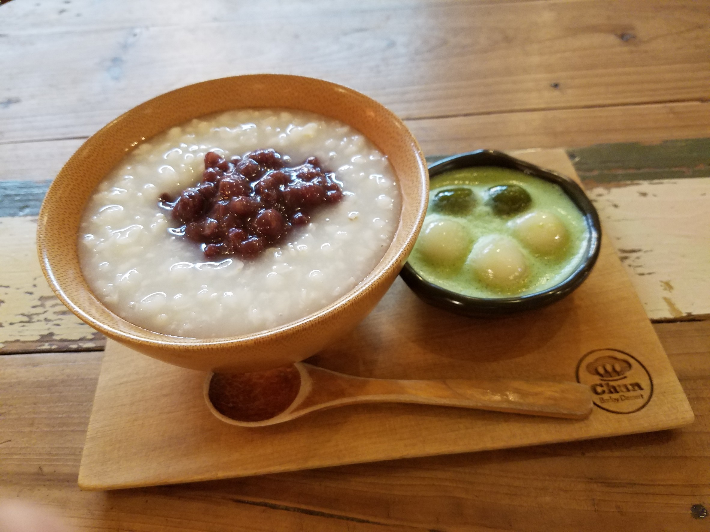
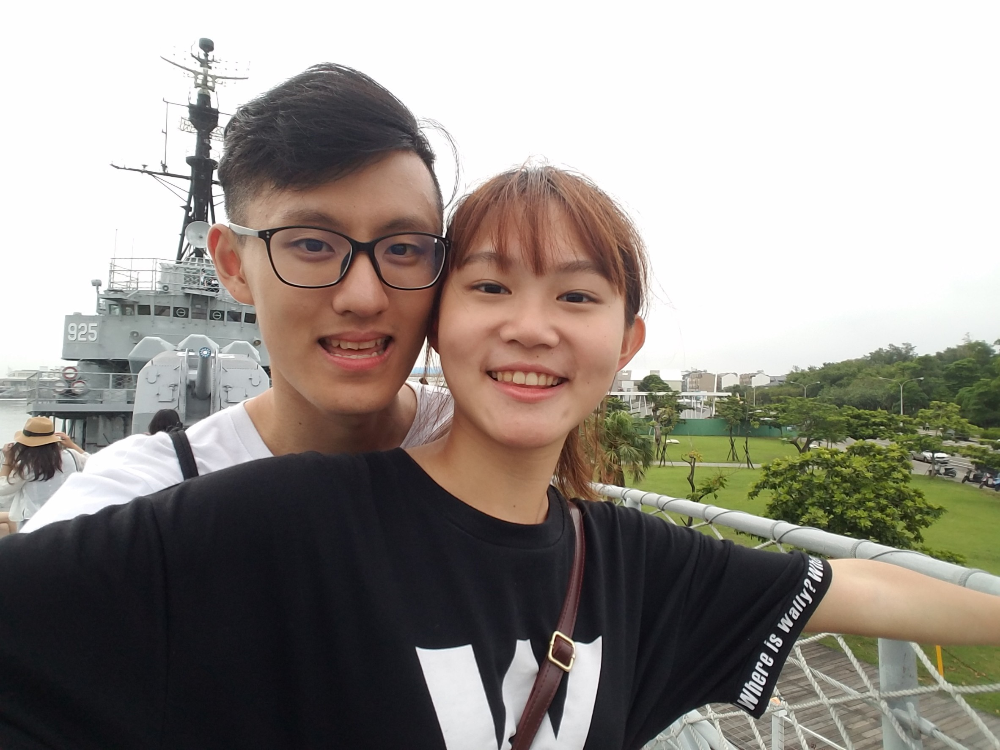
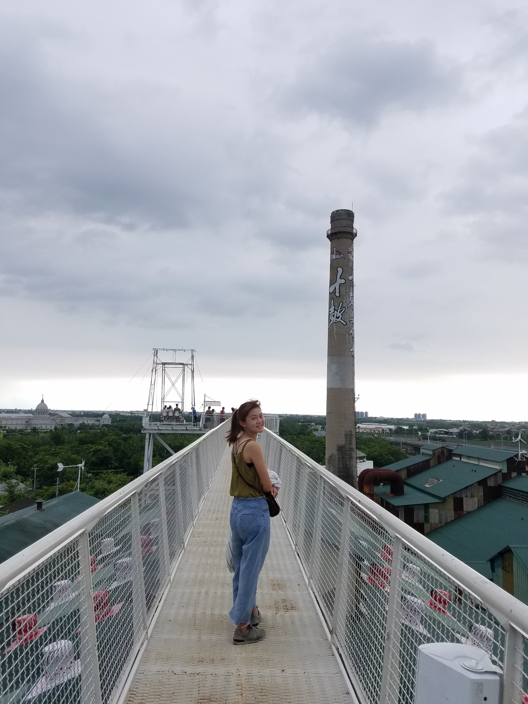

半夜的客運載著我們沉重的眼皮子
盞盞燈火向後奔馳
它們從南到北，從暖到寒，一路上擦身而過
直到我們，攤開熱情的仲夏
編織第一次期待
2018-07-12
@奇美博物館
第一次來這個地方
雖然有很多特別的東西
可惜真的睡太少
只想找地方睡覺zzZZ
2018-07-12
@隱藏美食-網美甜點
可惜是枇杷膏不喜歡的抹茶QQ

2018-07-12
@台江國家公園
雖然只是一個管理處
可是IG一查不知道為啥有超多照片
就開始假掰擺姿勢狂拍惹

2018-07-12
@四草綠色隧道
戴斗笠搭船，看濕地
有很多招潮蟹爬來爬去
大隻小隻一大堆

2018-07-12
@軍艦博物館
認真覺得超酷哈哈哈
上面繞了一大圈跟迷宮一樣
還假裝在演鐵達尼


2018-07-13
@十鼓文化園區
垂降,自由落體還有溜滑梯
爬到最頂
跟一對母子玩盪鞦韆XD

2018-07-13
回顧完才發現
我們真的很不愛拍照哈哈哈
兩天一夜吃了很多，玩了很多
遇到痛到哇哇叫的雨
遇到大排長龍的米粉湯
遇到空蕩蕩的神農街
台南已經留下我們的影子
此時此刻的我們
為彼此
繫上年少仲夏的青春